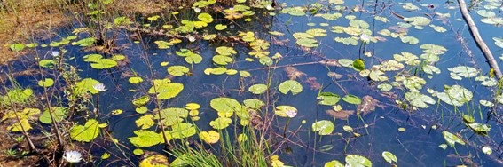

Pradarias e savanas abertas — inventário e monitorização
Savanas arborizadas

Sistemas de lagoas
Corpo de água principal
Segundo corpo de água
Instituições que apoiam o Jardim Botânico e a formação EGFB
ISPM
Casa Msika Lodge
Magodo Treinamento
EGFB